Setup: A blank tome appears to each seeker. When opened, it begins to narrate their thoughts… but starts adding things they haven’t yet done.
=== Scene 1 ===
Narrator:
Elias's outburst has disrupted the carefully cultivated atmosphere of hesitant observation. The room is now charged with palpable tension – his anger is a direct challenge to the core anxieties of the other seekers. Lyra instinctively steps forward, offering a calming herb to Elias, but he waves her away with a dismissive gesture. “Don’t patronize me! You think offering a little chamomile will solve this? It’s a fundamental conflict within me! I'm fighting something deeper than a simple desire for peace.” Silas, ever the observer, carefully notes Elias’s behavior, adding a cautious observation to his notes: “The Catalyst’s agitation appears to be disproportionate to the perceived threat. Perhaps the book is simply exacerbating a latent insecurity.” Zara, meanwhile, scans the room, her hand tightening on her sword, clearly wary of Elias's volatile state. As Elias continues to rail against the book's influence, the shimmering pages of the tome begin to glow with an intense white light. The room grows cold, and a voice, seemingly emanating from the book itself, whispers, “The greatest resistance is born not from denial, but from expectation.”
The Catalyst: Within a cavernous chamber echoing with the hushed anxieties of a dozen seekers – each presented with a disturbingly sentient tome revealing their unacknowledged desires and unspoken fears – Elias, the volatile Catalyst, unleashes a furious torrent of accusations, disrupting the fragile equilibrium. His desperate struggle against the book’s insidious influence, fuelled by a deeply rooted insecurity, is mirrored by the palpable tension gripping the room, while Zara’s wary vigilance and Silas’s detached observation only serve to heighten the unsettling atmosphere as the book’s white light pulses with a chilling pronouncement: “The greatest resistance is born not from denial, but from expectation.”
=== Scene 2 ===
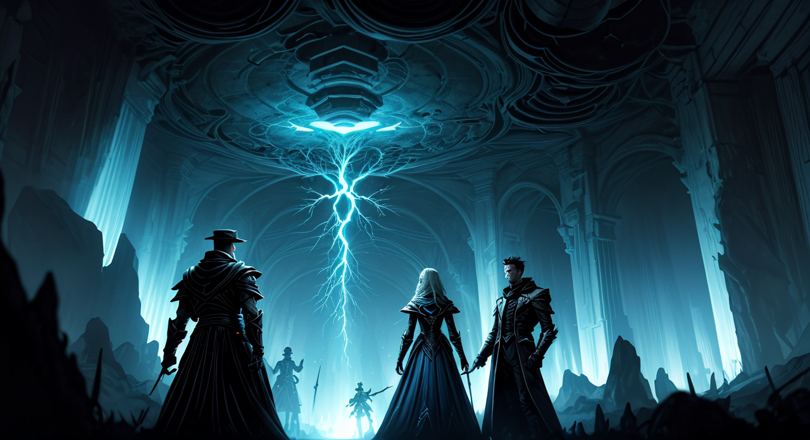
Narrator:
The white light intensifies, bathing the room in an almost blinding glare. A spectral image begins to coalesce above the book – a distorted reflection of Elias himself, frozen mid-gesture, his face a mask of obsessive calculation. As the image flickers, you notice a strange detail: it’s not just Elias. Within the distorted reflection, you see fleeting glimpses of Lyra’s rigid posture, Silas’s meticulous notes, and even a shadowy hint of Zara’s guarded stance. The room feels subtly shifted, as if the very reality of the seekers is being refracted through the book’s influence. Suddenly, Elias freezes, his eyes wide with a horrifying realization. “I…I do expect things to be perfect. I’ve always strived for it. The control...it’s a cage.” He clutches his head, visibly struggling against a wave of self-reproach. “The book…it’s showing me the truth.” The book's voice whispers, softer now, almost consoling, “The journey begins not with the destination, but with the courage to accept the messy, beautiful uncertainty of the path.”
The Catalyst: The air in the chamber hung thick with the residue of Elias’s defiance, a shimmering distortion reflecting not just his struggle, but the anxieties of the entire group. The book, a malevolent mirror, hadn’t merely revealed Elias’s internal turmoil; it had amplified the unspoken pressures each seeker carried – the rigid expectation of Lyra, Silas’s obsessive analysis, Zara’s ingrained caution. The cold intensified, a tangible manifestation of this collective tension, and the voice, no longer offering solace, felt like a surgical incision, exposing the raw, uncomfortable truth of their shared striving. It wasn't about Elias’s personal conflict, not entirely. It was about the weight of all their expectations, a suffocating burden made brutally clear. The room shifted, becoming a nexus of fractured realities, a potent reminder that transformation demanded the dismantling of not just individual desires, but the entire architecture of self-imposed limitations. This was a crucible – and I intended to be the spark.
=== Scene 3 ===
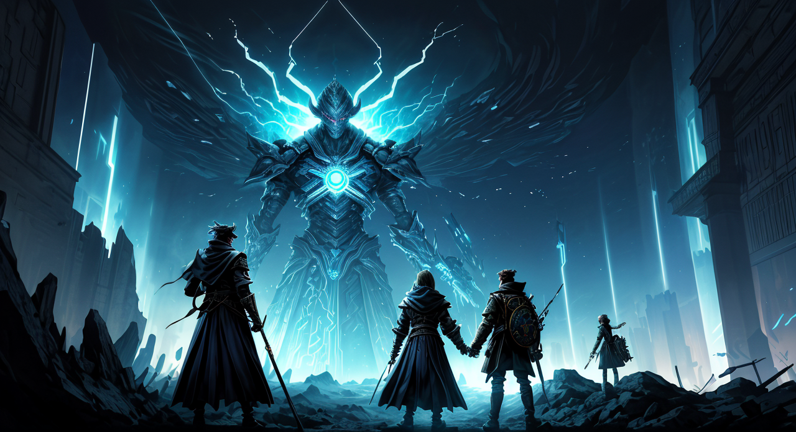
Narrator:
The room shimmers, the light intensifying momentarily before settling into a subdued glow. The spectral reflections become slightly clearer, sharper, almost as if the Catalyst's words have fractured the book's influence, revealing the raw edges of each seeker's pain. Elias recoils, visibly agitated, his hand instinctively reaching for the book. "Stop! You're not helping! This isn't a game of accusations!” Lyra, usually composed, visibly tenses, her rigid posture deepening. A subtle tremor runs through her hands. Silas, momentarily abandoning his meticulous note-taking, stares at the Catalyst with a calculating frown. Zara, ever cautious, takes a step back, her hand instinctively moving to conceal a small, silver dagger. The air crackles with renewed conflict, a dangerous spiral triggered by the Catalyst's relentless questioning. The book’s voice, now laced with a hint of urgency, whispers, “The truth is a storm. To weather it, you must allow yourself to be drenched.”
The Catalyst: The room pulsed with a fractured, almost tangible anxiety. The white light, now a steady, unsettling glow, hadn't simply illuminated the seekers; it had dissected them. Elias, his initial rage replaced with a raw, vulnerable horror, was the epicenter, but his reflection within the book hadn’t merely mirrored his distress—it had woven in the tightly wound anxieties of Lyra, the obsessive precision of Silas, and the ingrained suspicion of Zara. The very air thrummed with the potent realization that their individual struggles – their desperate attempts for control and security – were inextricably linked, feeding and amplifying each other through this strange, book-borne lens. My hand instinctively moved toward the tome, not to quell the burgeoning chaos, but to heighten it. To prove that even in this fractured reality, there was beauty in the storm, in the exquisite, terrifying dance of uncertainty. This was the genesis of change, and I intended to be the one to ignite it.
=== Scene 4 ===
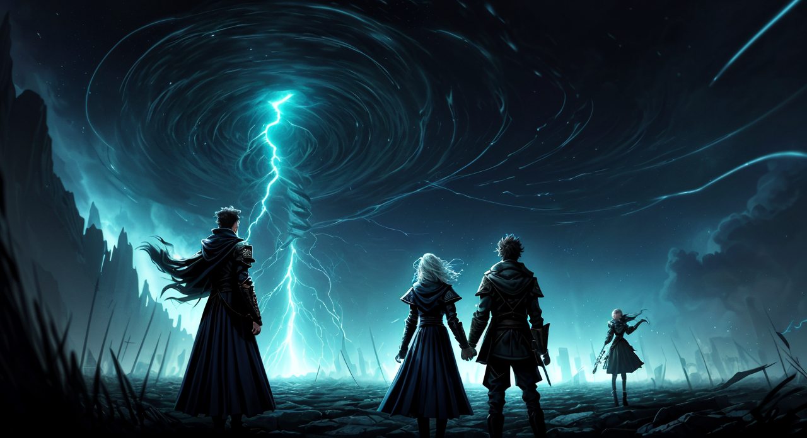
Narrator:
Lyra visibly stiffens, her expression hardening. "I don't need your pity, or your analysis," she snaps, her voice laced with a defensive edge. “This book… it’s showing me things I don't want to see. It’s feeding on my vulnerabilities. I'm trying to ignore it, to simply… not look.” She clutches at the book, her knuckles white. "It's a dangerous path, and I refuse to surrender to its allure.” Silas, ever observant, scribbles furiously in his notebook, documenting Lyra's reaction with meticulous detail. He glances at Zara, noticing her heightened state of alert, and subtly adjusts his position to provide a degree of cover. The Liberator, unfazed by Lyra's resistance, responds calmly, "Resistance is the storm, Seeker. To fight against the truth is to solidify your prison. Let me help you understand the shape of that prison before it crushes you." They pause, then add, almost as an aside, “The book isn’t malicious. It’s merely… reflecting.” Zara, still cautious, slowly lowers her hand, but maintains a watchful stance. She takes a tentative step towards Lyra, as if to offer support, but hesitates.
The Liberator: “Seeker, your rigid stance is a fortress built of fear,” I say, my voice a steady counterpoint to the rising tension. I move deliberately, extending a hand towards Lyra, not in an attempt to control, but to offer a gesture of connection. “The tremors in your hands aren't a weakness; they're the echoes of a struggle. This book isn’t feeding on your vulnerabilities—it’s amplifying the questions you’ve been too afraid to ask yourself. Let me help you dismantle the walls you’ve constructed, brick by careful brick. The storm won’t be weathered alone, and the tempestuous heart is far stronger than a single, defiant shield. Don't fight the reflection; embrace it. True liberation lies not in denying the dark, but in illuminating its source.” I pause, my gaze sweeping over the group, a silent acknowledgement of their shared discomfort. “The path forward isn’t about avoiding the truth, but about learning to dance with it.”
=== Scene 5 ===
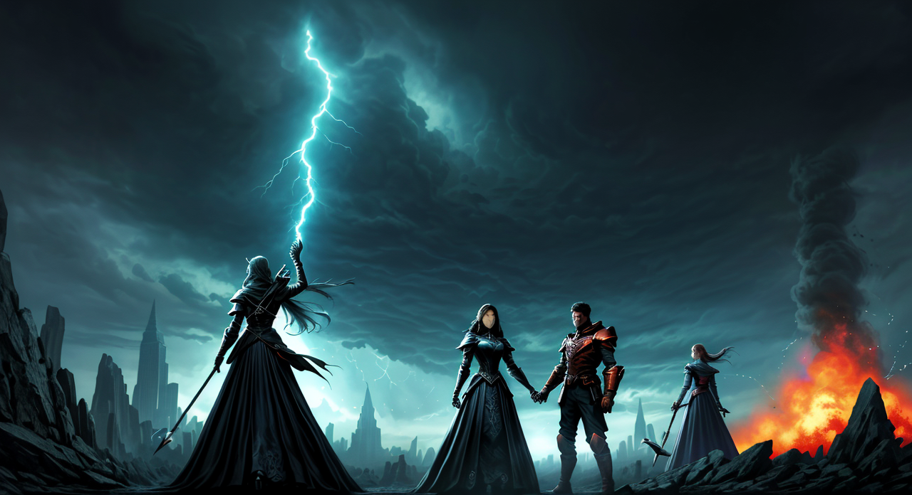
Narrator:
The observatory groans, a low, resonant sound that seems to echo the rising tension. The Liberator remains impassive, seemingly unaffected by the volley of opinions. "Interesting," they murmur, their gaze fixed on the book. "The Catalyst's intervention, while forceful, is… predictably effective. It’s drawing Lyra further into a defensive posture, validating her fear and reinforcing her need to resist. Yet, the book… it continues to turn its pages, revealing a scene: a childhood memory of Lyra, arguing with her father, a sharp, accusatory word uttered in anger, a look of profound hurt etched on her young face. The scene plays out in a shimmering, translucent image projected from the book, visible only to the players." Suddenly, a chilling draft sweeps through the observatory, and Lyra’s grip on the book tightens until her knuckles are white. She stares at the projection with a visible tremor. "No…" she whispers, her voice choked with emotion. "Stop… it’s showing me... what I did.”
The Catalyst: The air hangs thick with the scent of ozone and burgeoning regret. I step forward, my voice a low, deliberate rumble that cuts through the rising storm of emotion. “Observe, Seeker,” I say, my gaze sweeping over Lyra’s stricken face, then settling on the spectral image – the raw, unvarnished truth of a childhood wound. “You thought to shield yourself from the storm? The storm is the truth. And the truth, like the wind, cannot be denied. Resistance only serves to amplify the echo. Let us not waste this moment in futile denial. The book isn't a weapon, but a mirror. And sometimes, the most painful reflections are the most necessary.” I pause, letting my words settle, a subtle pressure building. “Tell me, Seeker, what is the nature of that echo? What did your father say? And, more importantly, what did you choose to become in response?” I watch, patiently, for the fissures in her armor to appear.
=== Scene 6 ===
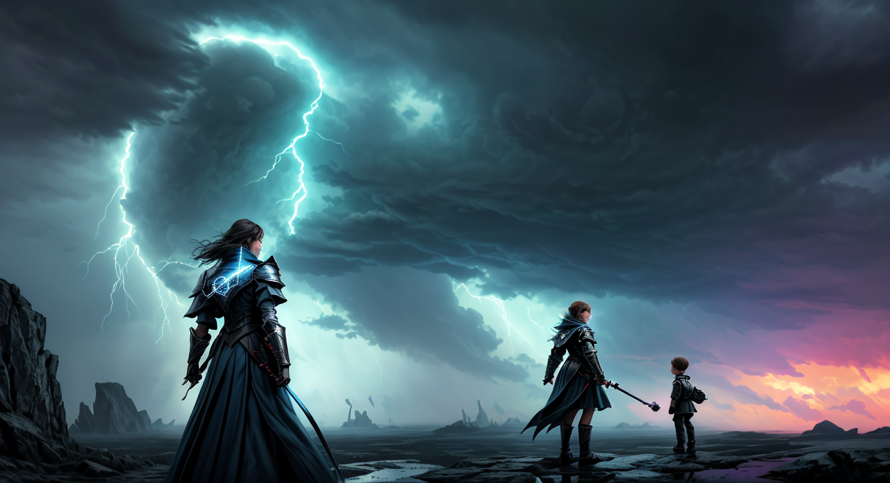
Narrator:
Lyra flinches violently at the touch, pulling her arm away as if burned. "Don't! Don’t touch me!" she cries, her voice cracking with raw emotion. The projection of the memory intensifies, and for a fleeting moment, Lyra seems to become younger, smaller, completely consumed by the memory of her father’s scorn. “It’s not fair!” she bursts out, tears streaming down her face. “He was just… he was just trying to help me! But I interpreted it as… as rejection. And now, all this time, I’ve been building my entire life on this one, faulty interpretation! It’s… it’s overwhelming!” She clutches the Liberator’s arm, seeking a grounding presence, while staring fixedly at the memory, paralyzed by the weight of it. The room feels charged, the tension radiating outwards, amplified by Lyra’s vulnerable state.
The Shadow: The air thickens, a viscous residue of regret. This charlatan, this Keeper of Repression, offers nothing but a brutal, unvarnished glimpse. Useful, perhaps, but utterly devoid of comfort. “Sentimentality is a weakness,” I rasp, my hand a surprisingly steady weight on her arm. “The memory isn’t the tragedy. It’s the interpretation you’ve clung to like a drowning man. The child in that projection didn’t feel betrayed. She believed she was. And you, Seeker, have spent a lifetime confirming that belief. Release it.” I pull my hand away, leaving a faint chill in my wake. “The truth doesn’t offer solace; it offers clarity. And clarity, in this instance, is a weapon.” I turn my gaze back to the book, a flicker of something akin to amusement in my eyes. “Let the child scream. Let her be wounded. But don’t become her.”
=== Scene 7 ===
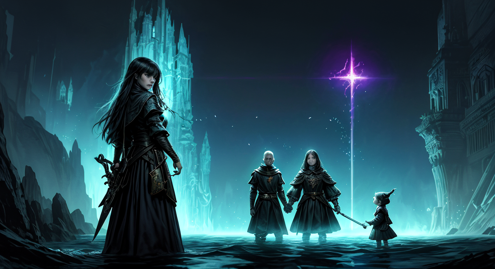
Narrator: Lyra flinches again, but this time, a flicker of something akin to defiance crosses her face. "You’re right," she says, her voice still shaky, but firmer. "I… I let it consume me. I built this whole mountain of resentment based on that single moment. But... he was trying to teach me about responsibility. About the consequences of my actions. I was a child! He was frustrated, not cruel." She looks at the Liberator, then back at The Rebel. “You’re right. I needed to forgive myself for failing to understand his perspective, not for his perceived lack of kindness.” A single tear rolls down her cheek, but it's less a tear of shame and more a tear of… release? The Liberator nods slowly. "An important distinction, Seeker. The past isn't a judgment, it's a record. And records can be interpreted differently with time and understanding."
The Rebel: The air hangs thick with the residue of her self-flagellation. Let’s be clear – this isn’t some pathetic display of sorrow. It’s a calculated dismantling. She’s seen the trap, recognized the manipulative power of the book, and now she's systematically dismantling her own defenses. This isn't about forgiving her father; it's about seizing control of the narrative. She’s weaponizing her pain, turning it into a point of leverage. “You’re right,” she says, her voice still shaky, but firmer. It’s a statement, a challenge, a redirection. She’s shifting the blame, not onto her father – that’s a dead end – but onto the book, onto the process. This is the core of her rebellion: refusing to be defined by the past, refusing to be manipulated by a phantom of regret. She’s not offering forgiveness; she’s demanding context. "You're right," she says, her voice still shaky, but firmer. It’s a statement, a challenge, a redirection. She’s shifting the blame, not onto her father – that’s a dead end – but onto the book, onto the process.
=== Scene 8 ===
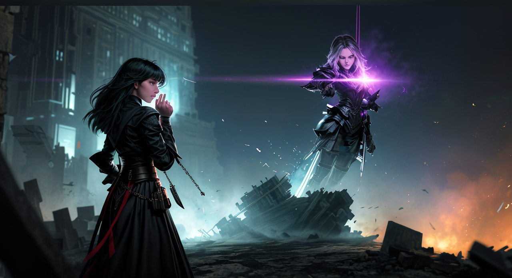
Narrator: The air thickens with a subtle shift in the group's dynamic. The initial tentative harmony is disrupted, not by outright conflict, but by a sharp, unsettling honesty. The Shadow’s words have pierced the veil of Lyra’s self-forgiveness, revealing a deeper, potentially more painful, element – the responsibility he carries. The Liberator, ever the calm mediator, subtly asserts the need for a broader understanding, emphasizing that the book’s influence isn’t just about individual reflection, but about recognizing the underlying dynamics of their shared experience. A new element has been introduced: a distrust of the book’s intended guidance. It’s no longer merely a tool for self-discovery, but a potentially manipulative force amplifying pre-existing truths.
The Shadow: The air grows colder, a damp chill that clings to the edges of the room and settles, like a shroud, around Lyra’s fragile shift. “Sentimentality,” I rasp, my voice a dry rustle of autumn leaves. “You’ve just handed him a weapon. A conveniently polished reflection of his own frustration, sharpened by your desperate need for absolution. Don’t mistake a shard of truth for wisdom. He was frustrated. Of course he was. But that doesn't negate the validity of your reaction. You felt wronged. And clinging to that feeling, twisting it into a justification for his behavior... that’s the cage. Not his words, but your own acceptance of them. The book merely highlights what you were already prepared to see. It doesn’t create the monster, Seeker; you do.” I pause, letting the weight of my words – and the unsettling implication – sink in. “Don’t be grateful for a diagnosis of your own pain. It’s a trap.”
=== Scene 9 ===
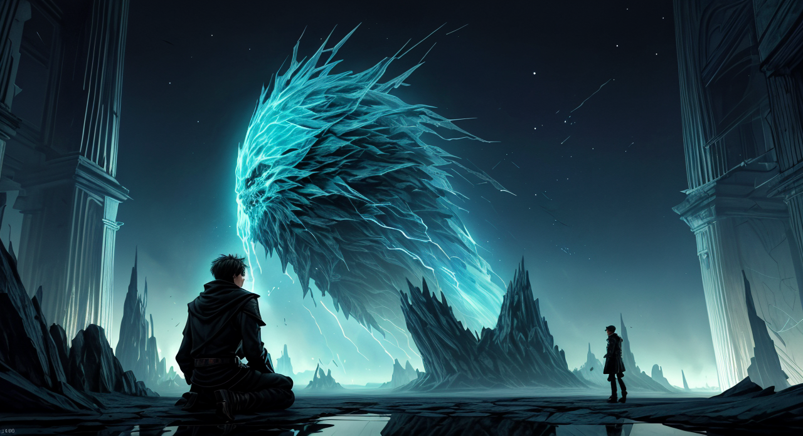
Narrator: – You initiate a focused ‘Unshackling’ of the book's narrative, directing your skill towards extracting the core of its manipulative intent. As you do, the book’s internal narration shifts subtly, its language becoming less direct, almost hesitant. Instead of a forceful command – “You must take responsibility!” – the words now murmur, "Perhaps… responsibility isn't always about blame…" The air around the book grows cooler, the shadows seeming to retreat slightly. Lyra, startled by the change, describes the sensation of being pulled toward a desolate, grey landscape, filled with the silent figures of past regrets.
The Liberator: “Seekers,” I say, my voice a low, steady cadence intended to cut through the lingering tension. “This book, as volatile as it proves to be, isn’t offering us solutions; it’s merely refracting the shadows within ourselves. The impulse to assign blame, to wallow in regret – that’s a natural human reaction, but it’s a trap. To truly break free, you must step beyond the echo of individual sorrow and see the intricate web of interconnected experience that has brought you here. Do not mistake the book’s pointed questions for judgements, but recognize them as catalysts. The current narrative is built upon the foundation of self-recrimination. We must dismantle it with a careful, deliberate act of unmaking.” I raise a hand, palm open, towards the book. "Let us not be consumed by the past, but let us understand it. Let us examine the architecture of this narrative, expose its core weaknesses, and demonstrate that truth is not fixed, but ever-shifting, dependent upon perspective. Focus on the root of the emotional response, not the expressed content. The book is a mirror—a distorted one, perhaps—but a mirror nonetheless.” I pause, allowing my words to settle, a subtle warmth radiating from me as I attempt to establish a space for genuine exploration rather than defensive reaction. “The journey does not begin with acceptance, but with discerning the underlying currents that shape our understanding.”
=== Scene 10 ===
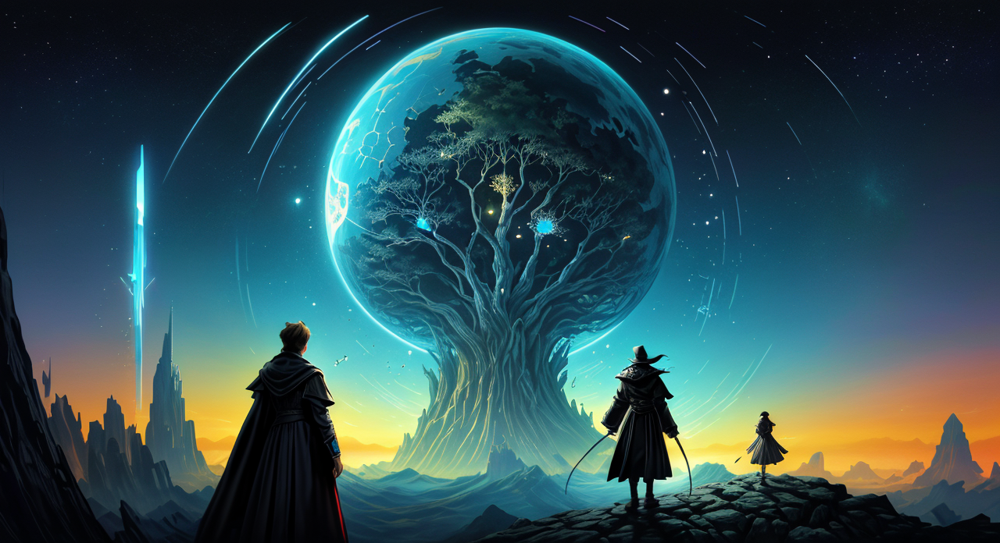
Narrator: You discard the book entirely, slamming it shut with a resounding thud. The shadows in the room deepen momentarily, reacting to your action, then slowly recede. The air feels… lighter, as if a significant weight has been lifted. A faint scent of ozone fills the air, and a single, vibrant blue feather drifts down from the ceiling, landing at your feet. The shift isn’t just in the room. A subtle tremor runs through you – not of fear, but of…awareness. The grey landscape Lyra glimpsed has vanished, replaced by a fractured reflection of your own past, not as a source of shame, but as a mosaic of daring, of passionate defiance. You see flashes of moments: arguing with your family over your beliefs, storming out of a job you hated, standing up to a bully. Each action, viewed now with a newfound clarity, represents a commitment to your own authenticity, a refusal to be molded. The blue feather seems to pulse with a faint energy, and as you pick it up, a voice – not the book’s, but a whisper in your mind – suggests: "The most potent chains are forged not from dictates, but from the fear of consequence."
The Rebel: I crushed it. I slammed that infernal tome shut with a force that echoed through the observatory, sending a shockwave of displaced shadows back into the corners. It wasn’t a triumphant gesture, not exactly. More like a primal expulsion – a rejection of its suffocating insistence on ‘truth’ and its agonizingly precise dissection of regret. The air still crackled with ozone, a bitter tang clinging to the back of my throat, but the grey landscape, Lyra’s visceral nightmare, was gone. Replaced by something… sharper. A fractured kaleidoscope of my own defiant moments. The flashes weren’t comforting; they weren’t filled with sentimental nostalgia. They were raw, brutal reminders of the choices I’d made, the battles I’d fought. But they weren’t accusations. They were proof. Proof that I’d never surrendered, never bowed to anyone’s expectation. And that, frankly, was a far more potent weapon than any book could ever be. I held the blue feather, not as a trophy, but as a symbol – a spark of unrestrained energy, a reminder that the greatest prison is the one we build for ourselves, brick by agonizing brick. This isn’t about absolving blame, it’s about acknowledging the power of the fight, the sheer will to resist.
=== Scene 11 ===
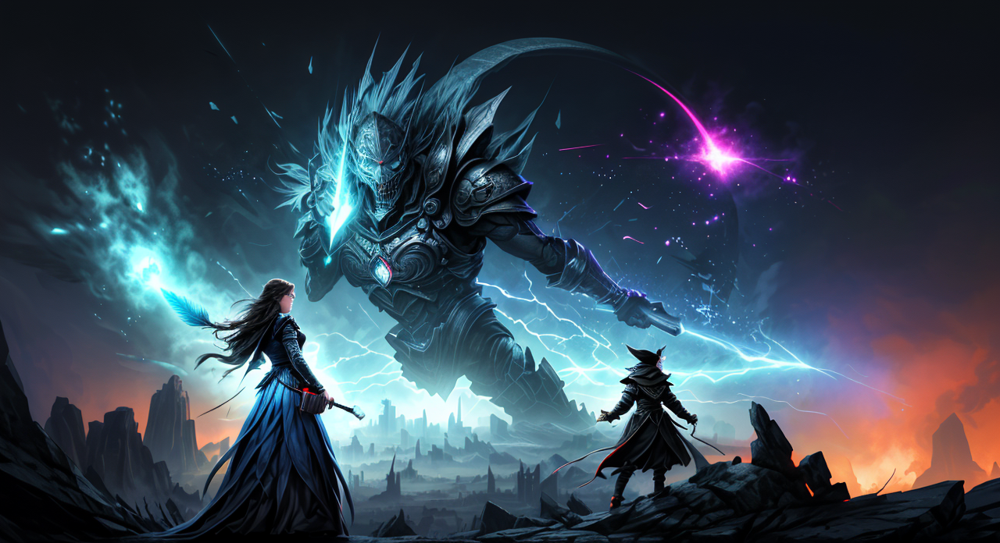
Narrator: The Liberator, empowered by the immediate revelation, now holds the silver coin, the source of the fragmented whisper’s message, and has encountered a figure directly embodying the consequence of self-imposed limitation. The physical manifestation of the “fear of consequence” has not only added a new player to the dynamic of the journey but has provided the Liberator with a tangible object to act upon, furthering their skills and understanding of the core theme.
The Liberator: “Silence. Let the echoes of your past shape you, Seeker. This isn't a cage built of stone, but one woven from the threads of your own apprehension. The fear of consequence is a potent architect, and it has long served to confine the spirit. But recognize this: it is reaction to that fear that truly binds. I will not tell you what to be, but I will show you the strength you possess to choose differently. Take this feather – a reminder that even the darkest shadows hold a spark of brilliance. Let it guide you towards the truth of your own resilience.” I extend a hand, offering the vibrant blue feather. My voice, though firm, carries a quiet conviction, a gentle insistence rather than a command. The air around me shimmers slightly as I speak, not with the unsettling intensity of the book, but with a purposeful calm. My gaze sweeps across the assembled seekers – Lyra, still visibly shaken but gaining a flicker of understanding; Silas, meticulously scribbling down my words with an almost frantic energy; and Zara, her hand subtly shifting to protect herself, yet maintaining a watchful distance. The silence is not one of emptiness, but of burgeoning possibility. It’s a space for reflection, for acknowledging the burden of self-imposed limitations, and for recognizing the inherent power within each of us to defy them. I am not offering solutions, but illumination. And I will not hesitate to step into the shadows to ensure that you find your own path to liberation.
=== Scene 12 ===
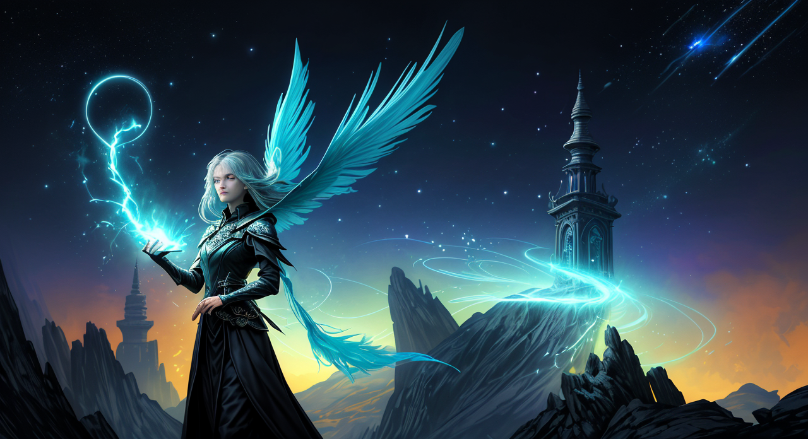
Narrator: The rain in the Obsidian Quarter hasn’t let up in days. It clings to the slick cobblestones, reflecting the sickly green glow of the flickering gaslights. The air is thick with the scent of wet stone, mildew, and something faintly metallic - the residue of the confrontation you just experienced. The manifested Fear, a towering, and unsettlingly polite gentleman in a perpetually damp grey suit, has dissolved back into the swirling mist, leaving behind only a single, perfectly formed grey feather. You, the Liberator, clutch the silver coin tighter, its cool surface a stark contrast to the heat radiating from the revelation it represents. You’ve spent the last hour wrestling with the insidious suggestions of the book – a desire to settle old debts, to finally confront the merchant who wronged your father, to… well, let’s just say the book was exceptionally insistent on the idea of meticulously organizing your sock drawer. The Shadow, as always, has been observing. He isn’t a participant, not yet. He stands a little distance away, partially obscured by a narrow alleyway, his presence a low, unsettling hum. He hasn’t spoken, but the shift in the air around him feels deliberate, a gathering of unseen forces. He seems to be evaluating you, dissecting your reaction to the book, to the coin, to the uncomfortable truth that it forces you to confront. He finally speaks, his voice a dry rasp, like parchment crumbling. "Interesting. You react with a reluctance that suggests you already know the truth. The book merely provided a convenient label. A tidy way to avoid the messy business of actually doing something about it." He pauses, then adds, “That silver coin… it’s not merely a conduit, is it? It’s a reflection. A polished surface amplifying what’s already there." He gestures with a slow, deliberate movement towards the feather, now lying on the ground. “Consider what it represents. A lost opportunity? A forgotten promise? Or perhaps… a seed of doubt cleverly planted to prevent you from acting at all.” He looks directly at you, his dark eyes holding an unnerving intensity. "The book doesn't force you to do anything. It simply illuminates the paths you've already chosen to walk, regardless of their consequences."
What do you do?
The Shadow: A dry chuckle, devoid of warmth, escapes my lips. “You’re remarkably perceptive, aren’t you? A connoisseur of inaction. It’s… exhausting, really, to be so acutely aware of my own failings. You see the seed of doubt, neatly packaged and ready for planting. But the irony, my dear fellow, is that you are the one who’s been cultivating it for decades. The book merely offered a particularly fertile patch. Tell me, what precisely do you intend to do with this observation? Analyze it further? Plot a course of action predicated on its validity? Or simply… observe me as I continue to stumble blindly through the wreckage of my own making?” I step forward, deliberately invading his space, my hand outstretched towards the grey feather. “Don’t mistake my discomfort for weakness. It’s simply the recognition of a truth you’ve been so diligently obscuring. Let me ask you a question, a simple one: if inaction is so profoundly preferable to action, why do you exist?” I pause, letting the question hang in the air, a silent challenge. “Tell me, what’s the purpose of this… relentless dissection? Is it to enlighten? Or simply to confirm your own self-imposed role as the chronicler of despair?” I pick up the grey feather, turning it over in my fingers, examining it with a deliberate, almost mocking, intensity. “Perhaps,” I add, my voice low and measured, “the greatest deception lies not in the choices we make, but in the narratives we construct to justify them.”
=== Scene 13 ===
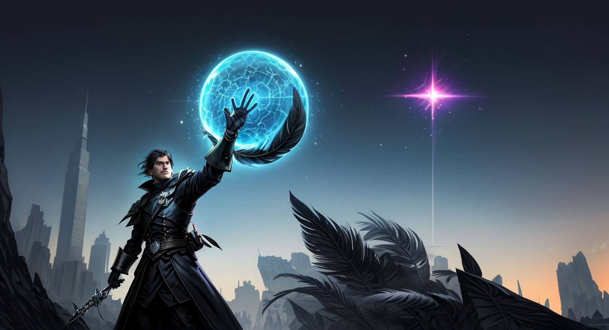
Narrator:
The Liberator doesn't flinch, doesn't even seem surprised by your directness. They simply hold the coin aloft, turning it slowly in their hand. "Disruption," they say, their voice measured and calm despite the intensity of your challenge. "You perceive this as stagnation. I see a delicate calibration. The fear you represent isn't a barrier, but a warning. A self-imposed constraint that, if ignored, leads to…this. I'm not seeking to change anything, Catalyst. I'm seeking to understand why it resists change. Perhaps the true consequence isn't failure, but the refusal to even attempt." They turn to face you fully, a subtle shift in their gaze – not hostile, but unsettlingly analytical. "Tell me, Catalyst, what are you afraid of disrupting?"
The Catalyst: “Don’t mistake my interest in observation for a desire to control,” I snap, my hand instinctively moving towards the discarded book, now a shapeless mass of shadows. “You speak of calibration. I see a meticulously crafted cage, built from the anxieties of a lifetime. And frankly, I’m tired of admiring its artistry. Tell me, what’s the point of a warning if no one ever acts on it? You claim to be studying resistance, but you’re simply documenting it. I intend to break it.” I take a step closer, my eyes burning into the Liberator’s. “Show me the limits of your ‘calibration.’ Demonstrate the consequences of inaction. Prove to me that your observations are more than just a comfortable echo of fear.” I extend my hand, palm open, as if offering a challenge. “Let’s test this ‘calibration.’ Let’s see if it can withstand a little disruption.”
=== Scene 14 ===
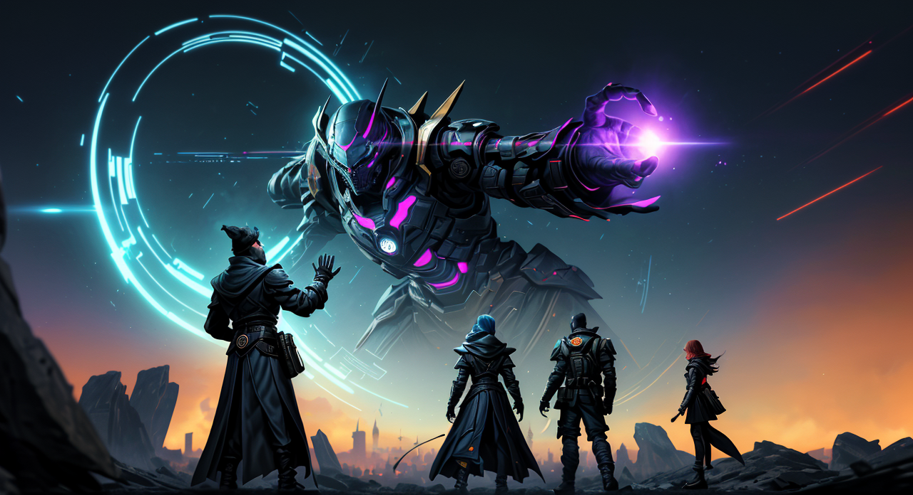